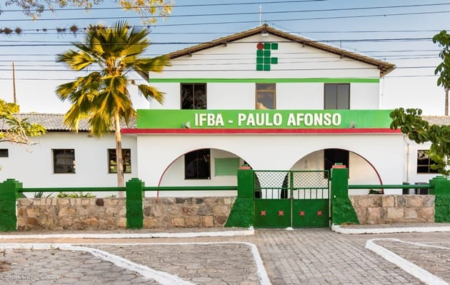

Campus Paulo Afonso — Bacharelado em Ciência da Computação

Auditório principal do Campus Paulo Afonso.
Confira abaixo a lista de eventos abertos e a agenda completa em formato de tabela. Para mais detalhes sobre cada evento, veja a seção sobre o projeto.
| Data | Evento | Local | Vagas |
|---|---|---|---|
| 10/10/2026 | Semana de Computação 2026 | Auditório principal | 120 |
| 24/10/2026 | Maratona de Programação IFBA | Laboratório 3 | 40 |
| 07/11/2026 | Palestra: Introdução ao Desenvolvimento Web | Sala 12 | 60 |
| Total de vagas ofertadas | 220 | ||
O Sistema de Gestão de Eventos é o projeto integrador desenvolvido pelos alunos da disciplina de Tecnologias Web. Ele reúne, em um único site, a divulgação e a inscrição em eventos do Campus Paulo Afonso.
"Um site simples, feito só com HTML, CSS e JavaScript, pode resolver um problema real da comunidade acadêmica."
Para saber mais, acesse o repositório do projeto ou entre em contato pelo e-mail eventos@ifba.edu.br.
© 2026 IFBA — Campus Paulo Afonso. Todos os direitos reservados.